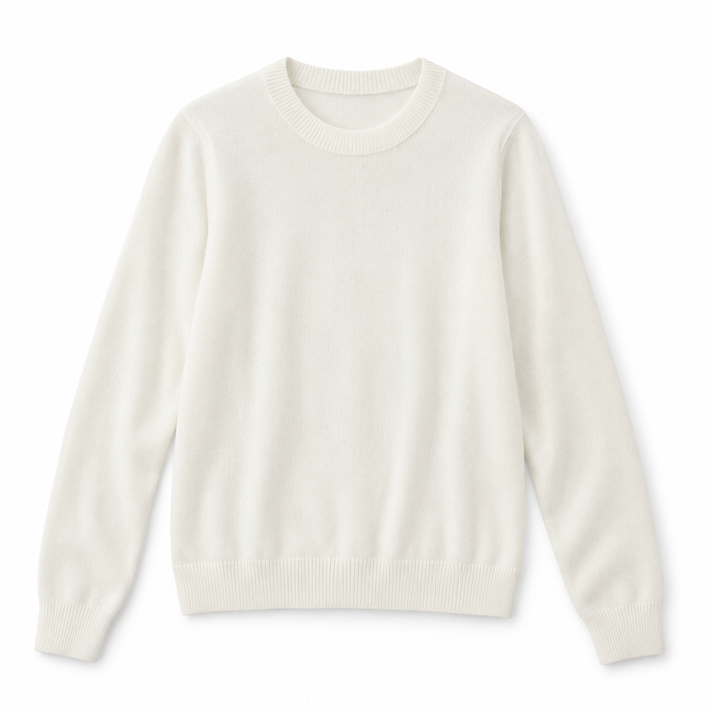
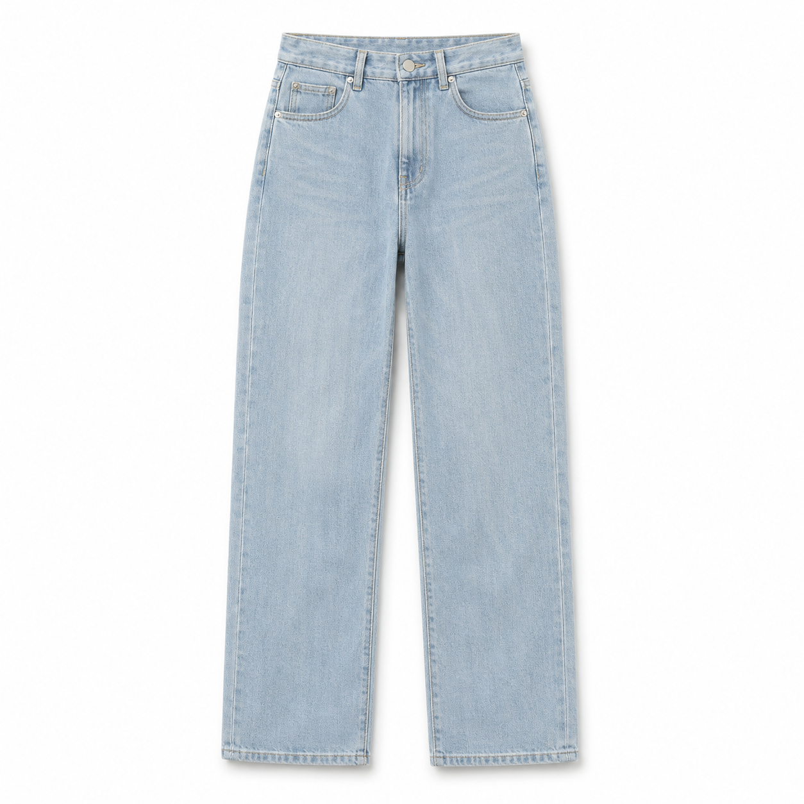
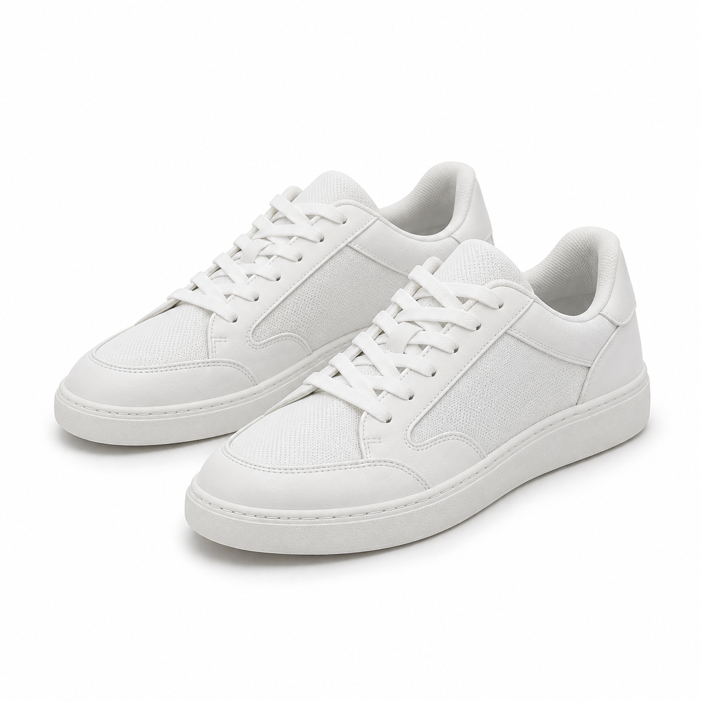

给衣橱一点秩序
按类别整理衣服、鞋子和配饰，把常穿的那几件，变成随手可搭的灵感。
YOUR WARDROBE, YOUR WAY
衣橱里的熟悉单品，也能搭出新鲜感。
跟着季节找灵感，或左右滑一滑，自己决定今天怎么穿。
给 20–30 岁的日常，一点轻松的穿衣灵感。



按类别整理衣服、鞋子和配饰，把常穿的那几件，变成随手可搭的灵感。
根据季节、实际温度和天气调整厚薄与层次，让搭配更贴近日常。
上装、下装、鞋子从上到下排列，每行独立切换，找到喜欢的组合。
MIX A LITTLE, FEEL DIFFERENT
先从下面的小演示开始。每次只换一件，看看整套搭配会有什么不同。
项目演示 · 无需登录这里使用示例单品与 AI 款式参考图，不会读取或保存你的个人档案、照片和衣橱。
MAKE IT YOURS
这个页面是项目主页与静态演示。完整 App 提供个人账号、面部参考、照片上传、衣橱管理和搭配收藏，在你自己的后台中运行。
查看完整项目与运行说明 ↗安装 Node.js 24 或更新版本，下载项目后，在项目文件夹打开终端：
cd outfit-independent
npm install
node launch.cjs启动后按提示打开 App。Windows 也可在安装依赖后，双击「启动独立版.cmd」。
按季节温度搭配、手动组合与衣橱保存可在本地使用。衣物分割需先下载本机模型；自动生成本人的全身穿搭图、文字 AI 与淘宝真实商品卡需要各自的外部服务配置。GitHub Pages 展示本页，不运行这些后台服务。